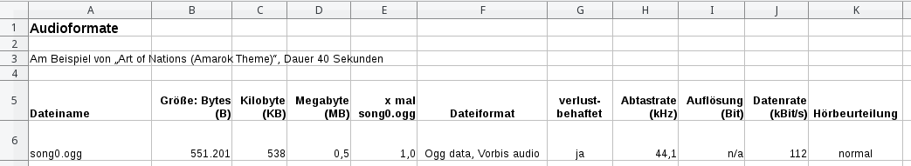

In diesem Arbeitsblatt geht es darum, festzustellen, dass es verschiedene Dateiformate zum Speichern von Audiodaten gibt.
Voraussetzung: paketmanager-zypper
Vorbereitung (song0)
-
Installiere amarok.
-
Erstelle einen Arbeitsordner, z. B. tmp/audio/ in deinem Homeverzeichnis.
-
Kopiere die Audio-Datei, die mit Amarok mitgeliefert wird in den Arbeitsordner, z. B. mit cp /usr/share/kde4/apps/amarok/data/first_run_jingle.ogg ~/tmp/audio/song0.ogg
-
Deinstalliere amarok wieder und installiere clementine.
Tabelle erstellen
Erstelle (z. B. mit LibreOffice Calc) eine Tabelle, die dann im weiteren Verlauf ausgefüllt wird. Die Tabelle sieht mit der Zeile für song0.ogg schon vorausgefüllt so aus:

Versuche, die Werte für song0.ogg wie im folgenden beschrieben selbst zu ermitteln.
Dateigröße
Die Dateigröße in Bytes (B) kann man mit dem Befehl ls -l song0.ogg oder mit rechter Maustaste auf die Datei → Eigenschaften ermittlen.
Die Dateigröße in Kilobyte (KB) ist der Byte-Wert geteilt durch 1024.
Die Dateigröße in Megabyte (MB) ist KB-Wert geteilt durch 1024.
Für die letzten beiden Werte verwende am besten eine Calc-Formel.
Die Spalte % zu song0.ogg besagt wie groß eine Datei im Vergleich zu song0.ogg ist. Für song0.ogg ist dies 100 %. Für die weiteren Zeilen kann ebenfalls - wenn auch etwas schwieriger - eine Formel verwendet werden.
Dateiformat
Die Informationen zum Dateiformat kann man mit dem Befehl file song0.ogg herausfinden, z. B.:
~/tmp/audio> file song0.ogg song0.ogg: Ogg data, Vorbis audio, stereo, 44100 Hz, ~112000 bps, created by: Xiph.Org libVorbis I
Dabei gilt:
"Ogg data, Vorbis audio" → Dateiformat
"44100 Hz" → Abtastrate → geteilt durch 1000 → 44,1 kHz
"112000 bps" → Datenrate → geteilt durch 1000 → 112 kbps
Die Auflösung gibt es bei diesem Dateiformat nicht. Deswegen schreiben wird dafür "n/a" (not available) in die Tabelle.
Alternativ kann man die Datei auch mit Clementine öffnen und mit rechter Maustaste → "Edit track information… Ctrl+E" → Summary anzeigen lassen.
.ogg → .wav (song1)
song0.ogg liegt im Dateiformat Ogg Vorbis. Dieses Format speichert die Audiodaten stark komprimiert, aber dafür ist es verlustbehaftet (wie z. B. auch mp3 oder aac).
Die Datei soll nun in das verlustfreie Format WAVE umgewandelt werden, dazu kann der Befehl oggdec verwendet werden (das "dec" steht für "Decoder"):
~/tmp/audio> oggdec song0.ogg
oggdec from vorbis-tools 1.4.0
Decoding "song0.ogg" to "song0.wav"
[100.0%]Für unsere Tabelle nun "song0.wav" umbenennen nach "song1.wav".
(Dies hätte man auch in einem Schritt machen können mit oggdec song0.ogg -o song1.wav, dabei steht "-o" für "output")
Bestimme nun wieder die Dateigröße und verwende wieder den file-Befehl, um Informationen über den Dateityp zu erfahren. Beim WAVE-Format gibt es keine Datenrate, aber dafür eine Auflösung in Bit (was das genau ist, wird später erklärt).
Frage: Um wieviel größer ist die wav-Datei im Vergleich zur ogg-Datei?
PCM 16 → 8 Bit (song2)
-
Installiere audacity.
-
Öffne damit song1.wav
-
Datei → Ton exportieren…
-
"Andere unkomprimierte Dateien" auswählen
-
Optionen… klicken und folgendes einstellen: Header: "WAV (Microsoft)", Codec: "Unsigned 8-bit PCM" (PCM steht für Puls-Code-Modulation)
-
Speichern unter song2-8bit-44kHz.wav
Fülle für die neue Datei eine neue Zeile in der Tabelle aus.
PCM 44kHz → 16kHz (song3)
-
Öffne song1.wav mit Audacity.
-
Stelle die Projektfrequenz (unten links) auf 16000
-
Datei → Ton exportieren… → "WAV (Microsoft) signed 16-bit PCM"
-
Speichern unter song3-16kHz.wav
Fülle für die neue Datei eine neue Zeile in der Tabelle aus.
PCM 44kHz → 8kHz (song4)
-
Öffne wieder song1.wav mit Audacity.
-
Stelle die Projektfrequenz (unten links) auf 8000
-
Datei → Ton exportieren… → wie im vorigen Abschnitt
-
Speichern unter song4-8kHz.wav
Fülle für die neue Datei eine neue Zeile in der Tabelle aus. Vergleiche den Klang mit song1 und schreibe deine Bewertung in die Spalte "Hörbeurteilung".
PCM 44kHz → 4kHz (song5)
-
Öffne wieder song1.wav mit Audacity.
-
Stelle die Projektfrequenz (unten links) auf 4000 (manuelle Eingabe!)
-
Datei → Ton exportieren… → wie im vorigen Abschnitt
-
Speichern unter song5-4kHz.wav
Fülle für die neue Datei eine neue Zeile in der Tabelle aus. Vergleiche den Klang mit song1 und schreibe deine Bewertung in die Spalte "Hörbeurteilung".
Frage: Was fällt auf, wenn man die Dateigröße und die Tonqualität mit song0 vergleicht?
oggenc (song6)
Verwende den oggenc-Befehl, um song1.wav in eine .ogg-Datei umzuwandeln ("enc" steht für "Encode"):
~/tmp/audio> oggenc song1.wav
Benenne die Datei in song6-q3.ogg um, da diese Datei mit der Standard-Qualität 3 komprimiert wurde, und fülle eine Tabellenzeile aus.
oggenc q -1 (song7)
Hier verwenden wird Qualitätsstufe -1 und leiten die Ausgabe gleich in die richtige Datei um:
~/tmp/audio> oggenc -q-1 song1.wav -o song7-q-1.ogg
Tabellenzeile ausfüllen.
oggenc q 10 (song8)
Hier verwenden wird Qualitätsstufe 10 und leiten die Ausgabe gleich in die richtige Datei um:
~/tmp/audio> oggenc -q-1 song1.wav -o song8-q10.ogg
Tabellenzeile ausfüllen.
Frage: Kannst du Unterschiede in der Tonqualität heraushören?
FLAC
FLAC steht für Free Lossless Audio Codec und komprimiert Audiodaten. Diese sind dann im Gegensatz zu ogg nicht verlustbehaftet, aber dafür ist die Datei größer.
Installiere das Paket flac.
Wandele song1.wav in FLAC um und benenne das Ergebnis um:
~/tmp/audio> flac song1.wav ~/tmp/audio> mv song1.flac song9.flac
Tabellenzeile ausfüllen.
Links
-
Clementine, mit Featureliste
-
siehe auch Arbeitsblatt Bildformate